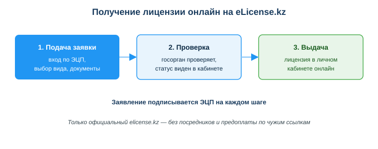
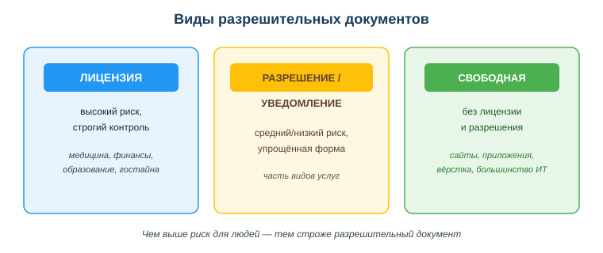

Оформлять лицензии и разрешения через eLicense.kz
Практическая ситуация
Твоя команда сделала приложение для аптеки: каталог лекарств, корзина, оплата. Заказчик доволен и спрашивает: «А лицензия для этого нужна? Кто её оформляет — вы или мы?» Если ответить наугад, можно подвести клиента или потерять заказ.
На самом деле часть деятельности нельзя вести «просто так»: государство требует лицензию или разрешение. Разработчик встречает это, когда делает продукт для регулируемой сферы (медицина, финансы, образование) или открывает своё дело. Получить такие документы онлайн помогает портал eLicense.kz.

Что ты научишься делать
- отличать лицензируемую деятельность от свободной;
- объяснять назначение портала eLicense.kz;
- описывать порядок получения лицензии или разрешения онлайн;
- распознавать признаки мошенничества при «оформлении лицензий».
Почему это важно
Лицензирование напрямую влияет на то, можно ли запускать продукт легально. Ошибка в этом вопросе — это не «мелкая неточность», а риск штрафов, остановки сервиса и потери доверия заказчика. Понимать, что и кому нужно оформить, важно ещё на этапе обсуждения проекта.
Связь с профессией: разработчик всё чаще консультирует заказчика на старте — нужна ли его деятельности лицензия, кто её получает, какие требования к ПО в регулируемой сфере. Это часть профессиональной грамотности, которая отличает специалиста от исполнителя «по ТЗ».
Учимся читать схему
Посмотри на схему получения лицензии онлайн выше. Ответь на вопросы:
- какие три основных шага проходит заявка от подачи до выдачи?
- чем подписывают заявление на каждом шаге?
- почему важно оформлять лицензию только на официальном elicense.kz, а не через посредников?
Главное понятие
Лицензия — официальное право заниматься определённым (регулируемым) видом деятельности, которое выдаёт государство.
Проще: лицензия — это «зелёный свет» от государства на рисковую деятельность. Рядом существует более простая форма — разрешение/уведомление — для менее рисковых видов. А большинство ИТ-услуг (сайты, приложения, вёрстка) относятся к свободной деятельности и лицензии не требуют.
Лицензия, разрешение и свободная деятельность
Разрешительные документы различаются по уровню риска деятельности:
- Лицензия — для регулируемых рисковых видов (медицина, финансы, образование, работа с гостайной).
- Разрешение/уведомление — упрощённая форма для менее рисковых видов деятельности.
- Свободная деятельность — не требует ни лицензии, ни разрешения (сюда относится большинство ИТ-услуг).

Важно: чаще всего лицензируется деятельность клиента или сфера применения, а не сам код. Разработка сайта или приложения обычно лицензии не требует. Но если продукт работает в регулируемой сфере (гостайна, финуслуги, медизделия) — требования появляются, и их нужно проверять.
Портал eLicense.kz
eLicense.kz — государственная база данных «Е-лицензирование»: подача заявлений, получение и проверка лицензий и разрешений онлайн.
Общий порядок:
- Войти на портал по ЭЦП.
- Выбрать нужную лицензию или разрешение из перечня.
- Подать заявление с приложенными документами.
- Подписать заявление ЭЦП.
- Получить результат в личный кабинет; статус можно отслеживать онлайн.
Мини-кейс
Команда делает приложение для аптек с функцией продаж. Возникает вопрос: нужна ли лицензия фармдеятельности? Следующий шаг: проверить на eLicense.kz перечень лицензируемых видов и уточнить, что лицензируется именно деятельность аптеки (клиента), а требования к ПО — отдельно. Так разработчик сразу даёт заказчику корректный ответ.
Разбор типичной ошибки
Ошибка. «Раз это ИТ — никаких разрешений не нужно никогда».
Почему это ошибка. Сама разработка обычно не лицензируется, но регулируемая сфера применения продукта может требовать лицензий или сертификации. Если этого не учесть, продукт нельзя будет легально запустить у клиента.
Как правильно. Проверять, в какой сфере работает продукт, и какие требования к этой сфере; уточнять, что лицензируется деятельность клиента, а не сам код. Оформлять документы только через официальный elicense.kz.
Практика
Ответь письменно:
- Назови три ИТ-продукта: один из свободной деятельности и два из регулируемых сфер. Для каждого укажи, нужна ли лицензия и кому.
- Перечисли по порядку шаги получения лицензии онлайн на eLicense.kz.
Образец (часть ответа на пункт 1): «Сайт-визитка для кафе — свободная деятельность, лицензия не нужна. Приложение для аптеки с продажами — лицензируется фармдеятельность аптеки (клиента), а не само приложение».
Самопроверка
- Я умею отличать лицензируемую деятельность от свободной.
- Я знаю назначение портала eLicense.kz и порядок подачи заявления онлайн.
- Я понимаю, что лицензируется деятельность клиента/сфера, а не сам код, и распознаю мошенников.
Подумай
- Какой из твоих учебных или будущих проектов мог бы попасть в регулируемую сферу? Кому в нём понадобится лицензия?
- Почему оформлять лицензию через посредника с предоплатой опаснее, чем сделать это самому на elicense.kz?
Итог
Что теперь делать:
- различай лицензируемую и свободную деятельность по уровню риска;
- для большинства ИТ-услуг лицензия не нужна, но всегда проверяй сферу применения;
- лицензии и разрешения оформляй онлайн через eLicense.kz с ЭЦП;
- не доверяй посредникам — используй только официальный портал.
Полезные ссылки
Источник: Закон РК «О разрешениях и уведомлениях»; материалы порталов elicense.kz и eGov.kz; ГОСО ТиПО (приказ МП РК № 348).
Материал разработан рабочей группой ТОО «Колледж Хекслет Казахстан» и одобрен к использованию в обучении решением Педагогического совета.